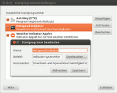

Netspeed
Dieser Artikel wurde für die folgenden Ubuntu-Versionen getestet:
Ubuntu 16.04 Xenial Xerus
Ubuntu 14.04 Trusty Tahr
Zum Verständnis dieses Artikels sind folgende Seiten hilfreich:
Das kleine Programm Netspeed war ein Applet für das Panel von GNOME 2. Es war dazu gedacht, sich den aktuellen Datenverkehr (englisch: Traffic) auf einer bestimmten Netzwerkschnittstelle (z.B. eth0, eth1 oder wlan0; siehe auch interfaces) anzeigen zu lassen. Zusätzlich ist eine kleine Verlaufsgrafik integriert.
Da ab Ubuntu 11.04 statt GNOME 2 Unity verwendet wird, ist das Programm so nicht mehr nutzbar. Es gibt aber eine Alternative mit dem Namen Indicator-Netspeed
Installation¶
Zuerst installiert man sich die Pakete [1] , die man zum Kompilieren [3] braucht:
build-essential
libgtop2-dev
libgtk-3-dev
libappindicator3-dev
git-core
 mit apturl
mit apturl
Paketliste zum Kopieren:
sudo apt-get install build-essential libgtop2-dev libgtk-3-dev libappindicator3-dev git-core
sudo aptitude install build-essential libgtop2-dev libgtk-3-dev libappindicator3-dev git-core
Anschließend „klont“ (herunterladen) man sich in einem Terminal [2] die Dateien von GitHub:
git clone git://github.com/mgedmin/indicator-netspeed.git
Hinweis!
Konfig-Datei anpassen¶
Man lädt sich die Konfigurationsdatei indicator-netspeed.c  herunter, kopiert sie in das durch den Klon-Befehl automatisch erstellte Verzeichnis indicator-netspeed und überschreibt damit die dort schon vorhandene Konfigurationsdatei indicator-netspeed.c.
herunter, kopiert sie in das durch den Klon-Befehl automatisch erstellte Verzeichnis indicator-netspeed und überschreibt damit die dort schon vorhandene Konfigurationsdatei indicator-netspeed.c.
Der Vorteil der hier angebotenen Konfigurationsdatei ist, dass sich die Up- und Download-Anzeige des Indikators nebeneinander (siehe nebenstehendes oberes Bild) und somit im Sichtbereich des Anwenders liegen. In der Originalvariante wird nur eine Zusammenfassung von Up- und Download angezeigt (siehe nebenstehendes unteres Bild).
Dann wechselt man in das eben mit dem Klon-Befehl automatisch erstellte Verzeichnis indicator-netspeed:
cd indicator-netspeed
Und kompiliert nun die dortigen Dateien:
make
Inbetriebnahme¶
Man kann nach erfolgreichem Kompilieren direkt testen, ob der Indikator funktioniert. Dafür gibt man den folgenden Befehl im Terminal [2] ein:
./indicator-netspeed
Oben rechts im Panel taucht nun der Indikator-Netspeed auf und zeigt die jeweiligen Geschwindigkeiten an. Mit der Tastenkombination ( Strg + C ) kann man diesen wieder beenden.
Automatisiert starten¶

Um den Indikator automatisch bei jedem Start im Panel zu haben, öffnet man den Unity-Schnellstart („Dash“), tippt sta und klickt dann auf das auftauchende Icon "Startprogramme". In dem Startprogramme-Fenster klickt man auf "Hinzufügen" und gibt folgendes ein:
Name:
Indikator NetspeedBefehl:
/home/USER/indicator-netspeed/indicator-netspeed(oder nutzt den Durchsuchen-Schaltknopf)Kommentar:
Download- und Upload-Geschwindigkeit
Programm stoppen¶
Mit einem Mausklick (egal ob rechte oder linke Maustaste) auf den Indikator und die Schaltfläche "Quit" beendet man diesen wieder.
Deinstallieren¶
Programm¶
Möchte man das Programm nicht mehr nutzen, muss man nur das Verzeichnis indicator-netspeed löschen.
Kompilierungs-Werkzeuge¶
Läuft das Programm zufriedenstellend und man möchte die im ersten Schritt heruntergeladenen Kompilierungsprogramme deinstallieren, so kann man den folgenden Befehl nutzen:
sudo apt-get purge build-essential libgtop2-dev libgtk-3-dev libappindicator3-dev git-core
Anschließend führt man noch den folgenden Befehl aus, um die Überreste dieser Pakete vom System zu entfernen:
sudo apt-get autoremove
Installation unter Gnome-Classic¶
Man muss die folgende Extension installieren: netspeed  , siehe dazu auch GNOME Shell/Extensions.
, siehe dazu auch GNOME Shell/Extensions.
Die Anzeige der DL- und UL-Geschwindigkeiten erscheint nach der Installation direkt links vom Datum. Man kann zwischen Gesamttransfer-Menge und getrennter DL-/UL-Anzeige mit der mittleren Maustaste (Klick auf linke und rechte Maustaste gleichzeitig) umschalten.
- Erstellt mit Inyoka
-
 2004 – 2017 ubuntuusers.de • Einige Rechte vorbehalten
2004 – 2017 ubuntuusers.de • Einige Rechte vorbehalten
Lizenz • Kontakt • Datenschutz • Impressum • Serverstatus -
Serverhousing gespendet von